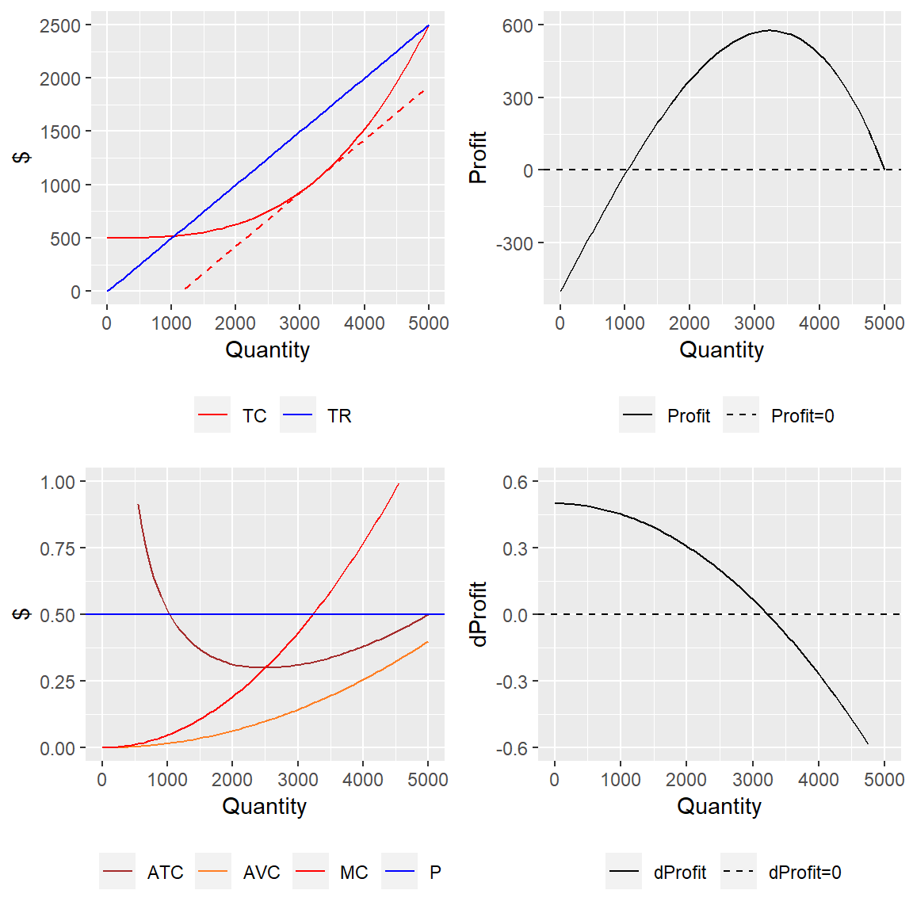

Review: The Firm’s Three Problems:
Cost-Minimizing Combination of Inputs.- Profit-Maximizing Level of Output.
- Long-Run Readjustment.
Perfectly Competitive Output Markets
\[\matrix{ \matrix{\text{1. Many sellers and buyers} \\ \text{2. Homogeneous product} \\ \text{3. Perfect information}} \Biggr\} \\ \text{4. Free entry and exit} \\ \text{ }} \matrix{\text{ } \\ \implies \\ \text{ } \\ \implies \\ \text{ } } \matrix{\Biggl\{ \matrix{\text{Firms are} \\ \text{price} \\ \text{takers}} \\ \text{Profits/losses} \\ \text{are temporary}}\]
The Producer’s Problem
- Objective:
- Endogenous (choice) variable:
- Exogenous variable(s):
The Profit Function: General Form
\[\max_Q \{ \pi(Q) = TR(Q) - C(Q) \} \] Since price is exogenous (determined by the market), \(TR = PQ\): \[\pi(Q) = PQ - C(Q)\]
The Profit Function: Per-Unit Form
Since \(C(Q) = ATC(Q) \cdot Q\), we can rewrite profits as:
\[\pi(Q) = [P - ATC(Q)]Q\]
Market Equilibrium
\[Q_d = 6,000,000 - 2,000,000P\] \[Q_s = 10,000,000*P\]
Solve for the market equilibrium price and quantity.
library(nleqslv)
market <- function(x) {
supply <- 10000000*x[1] - x[2]
demand <- 6000000 - 2000000*x[1] - x[2]
return(c(supply, demand))
}
equilibrium <- nleqslv(c(2,2), market)
P <- equilibrium$x[1]
P# In our introduction module, we solved the following example where:
# Q_s = P
# Q_d = 10 - P
market <- function(x) { # x[1] is price; x[2] is quantity
supply <- x[1] - x[2] # nleqslv finds "zeros": P - Q_s = 0
demand <- 10 - x[1] - x[2] # 10 - P - Q_d = 0
return(c(supply, demand)) # Return a vector function
}
equilibrium <- nleqslv(c(2,2), market) # Solve where both equations equal 0.Profit Maximization
When we left our representative firm, we could express the short-run production function (with capacity optimized at \(K = 25\) for \(Q = 2500\)) in terms of the cube-root of the labor input as:
\[f(L|K=25) = 100(25^{2/3})(L^{1/3})\].
Solving \(f(L|K = 25)\) for \(L\), we have:
\[L(Q) = \Bigg( \frac{Q}{100 \cdot 25^{2/3}} \Bigg)^3 =\frac{Q^3}{625,000,000}\]
The cost function is:
\[C(Q | K = 25) = 10L(Q) + 20(25)\]
\[C(Q) = \frac{Q^3}{62,500,000} + 500\]
Computational Approach
Find the solution to the profit-maximization problem numerically.
Careful! Since our profit function has multiple “critical values”
(points where change = 0), getting the correct solution will be
sensitive to the initial value (pars option)
library(MicroWithR)
P = 0.5
pi <- function(x)
P * x - (x ^ 3 / 62500000 + 500)
profitMax <-
solnp2(
pars = 1,
fun = pi,
LB = 0,
max = TRUE,
control = list(trace = 0)
)# Don't forget to load your libraries!
# Define losses (minus-profits) as the function(x) because 'solnp()' finds a min
# Since there's no constraint, we only need three arguments:
# (1) a starting value of Q;
# (2) the objective function;
# (3) the lower bound for Q, "x" (unnecessary with an interior solution). Graphical Approach
Construct the following graphs:
- Total revenue and total cost versus quantity
library(ggplot2)
tcGraph <- ggplot() +
geom_function(fun = function(x) 500 + x^3 / 62500000) +
geom_function(fun = function(x) P*x) +
lims(x = c(0, 5000), y = c(0, 2500)) - Marginal revenue, marginal cost, average cost, and average variable
cost versus quantity;
ggplot() +
geom_function(fun = function(x) x^2/62500000 + 500/x) +
geom_function(fun = function(x) x^2 / 62500000) +
geom_function(fun = function(x) 3*x^2 / 62500000) +
geom_hline(yintercept = P) +
lims(x = c(0, 5000), y = c(0, 1)) - Total profit versus quantity;
piGraph <- ggplot() +
geom_function(fun = function(x) P * x - (500 + x^3 / 62500000)) +
geom_hline(yintercept = 0) +
lims(x = c(0, 5000), y = c(-500, 600)) - Marginal (change in) profit versus quantity (bottom right);
ggplot() +
geom_function(fun = function(x) 0.5 - (3*x^2 / 62500000)) +
geom_hline(yintercept = 0) +
lims(x = c(0, 5000), y = c(-0.6, 0.6)) Comparison of the Graphical Equilibria
## Loading required package: Rsolnp## Loading required package: shinytestWe can name the plots and combine them using
ggpubr::ggarrange() as I’ve done below (with some extra
aesthetics. For details see below.
library(ggpubr)
ggarrange(tcGraph, piGraph, acGraph, dpiGraph)## Warning: Removed 24 rows containing missing values (`geom_function()`).## Warning: Removed 9 rows containing missing values (`geom_function()`).## Warning: Removed 5 rows containing missing values (`geom_function()`).
Click here to see the code for adding all of the fancy color, linetype, and legend aesthetics.
library(MicroWithR)
P = 0.5
pi <- function(x)
P * x - (x ^ 3 / 62500000 + 500)
profitMax <-
solnp2(
pars = 1,
fun = pi,
LB = 0,
max = TRUE,
control = list(trace = 0)
)
qStar <- profitMax$pars
library(ggplot2)
tcGraph <- ggplot() +
geom_function(fun = function(x) 500 + x^3 / 62500000, aes(color = "TC")) +
geom_function(fun = function(x) P*x, aes(color = "TR")) +
geom_function(fun = function(x) 500 + qStar^3 / 62500000 - 0.5*qStar + 0.5 * x,
color = 'red', linetype = 'dashed') +
lims(x = c(0, 5000), y = c(0, 2500)) +
labs(x = "Quantity", y = "$", color = "") +
scale_colour_manual(breaks = c("TC", "TR"), values = c("red","blue")) +
theme(legend.position = "bottom")
piGraph <- ggplot() +
geom_function(fun = function(x) P * x - (500 + x^3 / 62500000),
aes(linetype = "Profit")) +
geom_hline(aes(yintercept = 0, linetype = 'Profit=0')) +
lims(x = c(0, 5000), y = c(-500, 600)) +
labs(x = "Quantity", y = "Profit", linetype = "") +
scale_linetype_manual(breaks = c("Profit", "Profit=0"), values = c("solid","dashed")) +
theme(legend.position = "bottom")
acGraph <- ggplot() +
geom_function(fun = function(x) x^2/62500000 + 500/x, aes(color = "ATC")) +
geom_function(fun = function(x) x^2 / 62500000, aes(color = "AVC")) +
geom_function(fun = function(x) 3*x^2 / 62500000, aes(color = "MC")) +
geom_hline(aes(yintercept = P, color = 'P')) +
lims(x = c(0, 5000), y = c(0, 1)) +
labs(x = "Quantity", y = "$", color = "") +
scale_color_manual(breaks = c("ATC", "AVC", "MC", "P"), values = c("brown", "chocolate1","red", "blue")) +
theme(legend.position = "bottom")
dpiGraph <- ggplot() +
geom_function(fun = function(x) 0.5 - (3*x^2 / 62500000), aes(linetype = 'dProfit')) +
geom_hline(aes(yintercept = 0, linetype = 'dProfit=0')) +
lims(x = c(0, 5000), y = c(-0.6, 0.6)) +
labs(x = "Quantity", y = "dProfit", linetype = "") +
scale_linetype_manual(breaks = c("dProfit", "dProfit=0"), values = c("solid","dashed")) +
theme(legend.position = "bottom")Analytical Approach
The analytical solution undertakes the following steps:
- Load
Ryacas.
- Define the profit function.
- Derive \(d\pi/dQ\) and simplify.
- Solve \(d\pi/dQ = 0\) for \(Q\), remove the variables, and reformat as
an
Robject.
The following code solves the producer’s problem analytically using
Ryacas.
library(Ryacas)
pi <- ysym('0.5*Q - 500 - Q^3 / 62500000') # Define the profit function as a yac_symbol
dpi <- deriv(pi, 'Q') |> # Take the derivative (and simplify)
simplify()
qStar <- solve(dpi, 'Q')[1] |> # Solve for Q (take the first [>0] value)
y_rmvars() # Isolate the solution.The first-order condition for the profit-maximization problem is:
\[\frac{-3 Q ^{2}}{62500000} + 0.5 = 0\]
This is the condition that sets \(MR = MC\).
The profit-maximizing quantity is:
\[Q^* = \sqrt{\frac{0.3125e8}{3} } \approx 3227.486\]